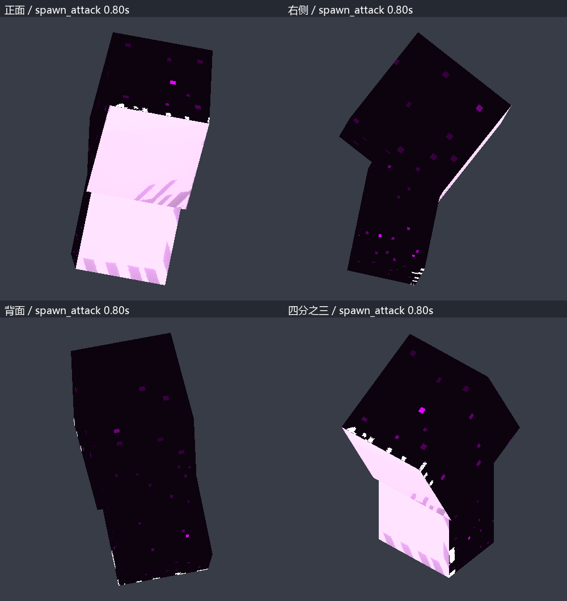
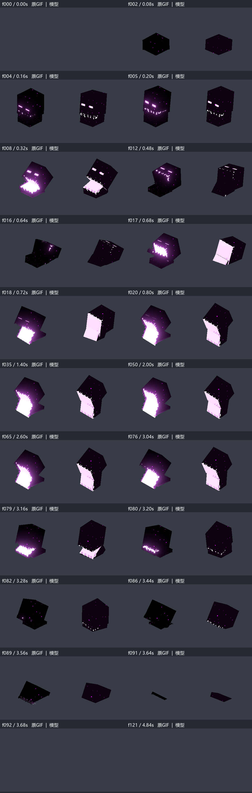

展开全部122帧 / 21页


当前同头版：用户已要求统一为末影之心主模型的头部，查看最新模型对照、动作与验证。下方为原厚颚版268d的历史图片，不代表当前bbmodel。
全部122参考帧按同一时间配对。以下为离线CPU模型投影，非Blockbench、非真实游戏。上壳/下颚角度及隐藏深度含推断；局部仍有约10–25px轮廓差异。
报告与限制 · 模型 · 验证 · 文件及空白帧检查 · UV来源 · 素材署名 · 嘴部坐标
SHA-256：268d11878897ac78e6b527dfd970769c8711724614c790c3c82c9f4acf6f412f



5部件，11元素，6骨骼；idle/walk是隐藏静态技术占位，不是原作行走。原素材版权属于Mojang；本项目非商业，与Mojang无关联。